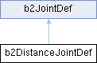

#include <b2DistanceJoint.h>
Inheritance diagram for b2DistanceJointDef:

Public Member Functions | |
| void | Initialize (b2Body *bodyA, b2Body *bodyB, const b2Vec2 &anchorA, const b2Vec2 &anchorB) |
Public Attributes | |
| b2Vec2 | localAnchorA |
| The local anchor point relative to bodyA's origin. | |
| b2Vec2 | localAnchorB |
| The local anchor point relative to bodyB's origin. | |
| float32 | length |
| The natural length between the anchor points. | |
| float32 | frequencyHz |
| float32 | dampingRatio |
| The damping ratio. 0 = no damping, 1 = critical damping. | |
 Public Attributes inherited from b2JointDef Public Attributes inherited from b2JointDef | |
| b2JointType | type |
| The joint type is set automatically for concrete joint types. | |
| void * | userData |
| Use this to attach application specific data to your joints. | |
| b2Body * | bodyA |
| The first attached body. | |
| b2Body * | bodyB |
| The second attached body. | |
| bool | collideConnected |
| Set this flag to true if the attached bodies should collide. | |
Detailed Description
Distance joint definition. This requires defining an anchor point on both bodies and the non-zero length of the distance joint. The definition uses local anchor points so that the initial configuration can violate the constraint slightly. This helps when saving and loading a game.
- Warning
- Do not use a zero or short length.
Member Function Documentation
◆ Initialize()
| void b2DistanceJointDef::Initialize | ( | b2Body * | bodyA, |
| b2Body * | bodyB, | ||
| const b2Vec2 & | anchorA, | ||
| const b2Vec2 & | anchorB | ||
| ) |
Initialize the bodies, anchors, and length using the world anchors.
Member Data Documentation
◆ frequencyHz
| float32 b2DistanceJointDef::frequencyHz |
The mass-spring-damper frequency in Hertz. A value of 0 disables softness.
The documentation for this struct was generated from the following files:
- modules/juce_box2d/box2d/Dynamics/Joints/b2DistanceJoint.h
- modules/juce_box2d/box2d/Dynamics/Joints/b2DistanceJoint.cpp